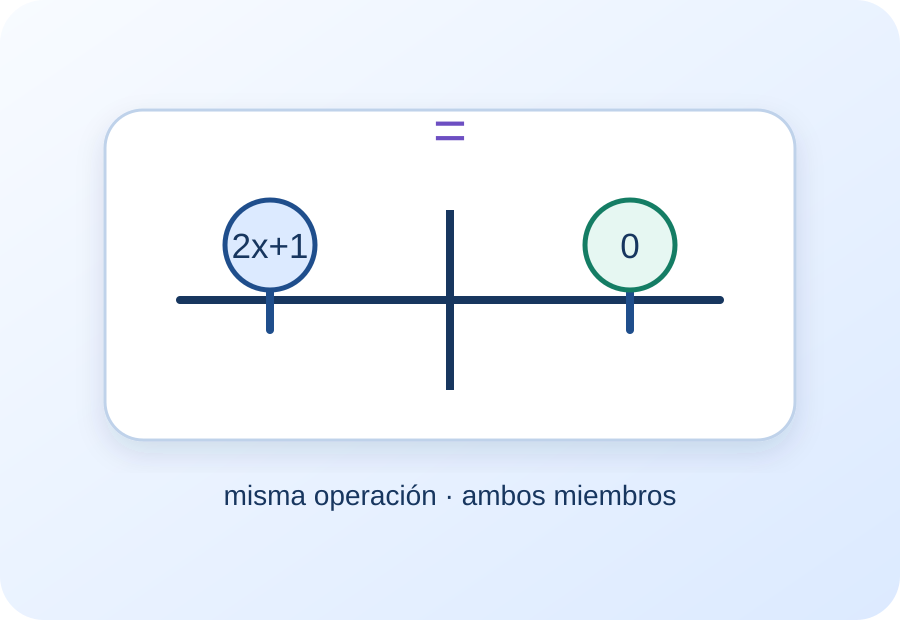
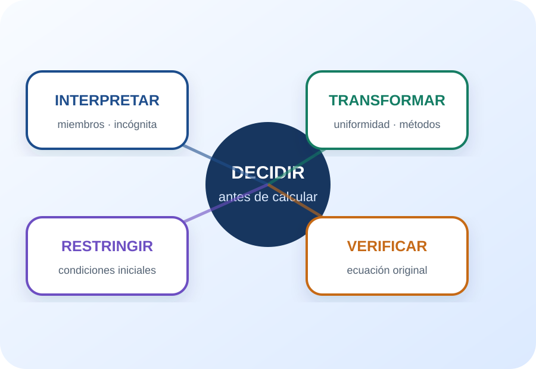

Interpretar
Reconocer miembros, incógnita, igualdad y conjunto solución.
Cápsula 2 · Ecuaciones
Ecuaciones equivalentes, condiciones iniciales y decisiones de resolución
Una experiencia no lineal para interpretar la igualdad, sostener la equivalencia, reconocer distintos conjuntos solución y controlar las restricciones de expresiones racionales, radicales y logarítmicas.
El progreso y la bitácora se guardan solamente en este dispositivo.

Pregunta central: ¿Cómo transformar una ecuación sin cambiar —ni ampliar por error— su conjunto solución?
Antes de resolver
La propuesta reorganiza la teoría y los ejemplos de los materiales de la cátedra en unidades breves. Cada nodo combina explicación, representación, una decisión matemática y devolución inmediata. El objetivo es sostener un recorrido completo sin imponer un único orden.
Reconocer miembros, incógnita, igualdad y conjunto solución.
Usar uniformidad, distributividad, factorización y fórmulas con sentido.
Determinar condiciones iniciales antes de operar.
Comparar las soluciones obtenidas con la ecuación original y sus restricciones.
“Resolver no es mover términos: es construir una cadena de ecuaciones equivalentes y verificar el resultado.”
Elegí una entrada
Podés comenzar por el significado de solución, por las transformaciones, por las condiciones iniciales o por las aplicaciones y expresiones racionales.
¿Cuándo dos ecuaciones dicen exactamente lo mismo?
¿Qué operaciones conservan el equilibrio de la igualdad?
¿Qué valores deben excluirse antes de empezar?
¿Qué estructura conviene reconocer antes de elegir un método?
Nodo 01
¿Cuándo dos ecuaciones dicen exactamente lo mismo?
Una ecuación establece una igualdad entre dos expresiones. Resolverla significa encontrar los valores que la vuelven verdadera. Dos ecuaciones son equivalentes cuando tienen el mismo conjunto solución.
Miembro izquierdo, signo igual y miembro derecho. La incógnita representa un valor por determinar.
Puede haber una solución, varias, ninguna o todos los reales. Se representa mediante un conjunto \(\mathrm{Sol}\).
El objetivo es pasar a expresiones más simples sin cambiar el conjunto solución.
Los materiales incluyen ecuaciones lineales, cuadráticas, logarítmicas, racionales y con valor absoluto.
Tres posibles finales
Una igualdad falsa produce \(\mathrm{Sol}=\varnothing\); una igualdad verdadera independiente de \(x\) produce \(\mathrm{Sol}=\mathbb{R}\), salvo las condiciones iniciales; una igualdad que determina x produce un conjunto finito de soluciones.
Decisión rápida
Nodo 02
¿Qué operaciones conservan el equilibrio de la igualdad?
La uniformidad indica que una operación aplicada a un miembro debe aplicarse también al otro. Junto con la distributiva, el aislamiento de términos, la factorización y las fórmulas, permite construir ecuaciones equivalentes.
Si \(a=b\), entonces \(a+c=b+c\). Sumar el opuesto ayuda a aislar términos.
Si \(a=b\), entonces \(ac=bc\). Para deshacer un producto conviene multiplicar por un inverso no nulo.
Reflexividad, simetría y transitividad permiten justificar cadenas de igualdades.
Distributiva, agrupamiento, mínimo común múltiplo, producto cero, factorización y fórmula cuadrática, según la estructura.
Evitar el “pasa restando”
De \(3x-4=2\) se suma \(4\) a ambos miembros: \(3x=6\). Luego se multiplica por \(\frac13\) en ambos miembros: \(x=2\). Cada paso muestra la propiedad aplicada.
Decisión rápida
Nodo 03
¿Qué valores deben excluirse antes de empezar?
Las condiciones iniciales delimitan los valores para los que la ecuación está definida. Deben establecerse antes de operar y revisarse al final, porque una solución algebraica puede quedar excluida.
Cada denominador debe ser distinto de cero.
Cada argumento debe ser estrictamente positivo.
El radicando debe ser mayor o igual que cero.
Una transformación puede producir candidatos. Solo son soluciones los que verifican la ecuación original y las condiciones iniciales.
Una ecuación que termina sin solución
En \(\log_4(x-1)=\frac12+\log_4(x)\), la condición inicial exige \(x>1\). La transformación conduce a \(x=-1\), que no cumple la condición. Por lo tanto, \(\mathrm{Sol}=\varnothing\).
Decisión rápida
Nodo 04
¿Qué estructura conviene reconocer antes de elegir un método?
Las ecuaciones modelan situaciones y también aparecen en operaciones con expresiones racionales. Reconocer productos, denominadores y dependencias evita aplicar un procedimiento fuera de contexto.
Si un producto es cero, al menos uno de sus factores debe ser cero. Esta propiedad permite resolver ecuaciones factorizadas.
Son cocientes de polinomios. Para sumar o restar se busca un denominador común; para multiplicar y dividir se usan las propiedades de fracciones.
El material usa un crecimiento exponencial de una población de aves para conectar datos, ecuación y evaluación del modelo.
No todas las ecuaciones se resuelven igual: primero se identifica la estructura y luego se elige una transformación válida.
Ecuación factorizada
\((x-5)\left(\frac{x}{2}+3\right)=0\) implica \(x-5=0\) o \(\frac{x}{2}+3=0\). Las soluciones son \(x=5\) y \(x=-6\).
Decisión rápida
Actividad integradora
Leé el caso, elegí una respuesta y revisá la devolución. Cada situación tiene un identificador para registrar tu estrategia en la bitácora.
Pausa y cambio de registro
El audio propone una pausa activa, el esquema organiza las conexiones y los videos muestran procedimientos. Los recursos externos son complementarios: la referencia principal sigue siendo el material de la cátedra.
Elegí una pista original de la cápsula y usá la pregunta cambiante para revisar tu estrategia.

El centro del esquema no es una fórmula: es la decisión que precede al cálculo.
Microvideo creado para resolver \(\frac{(x+1)(x-1)}{x-1}=0\) y mostrar por qué \(x=1\) sigue excluido.
Resolución de \(\log_4(x-1)=\frac12+\log_4(x)\), enlazada desde el apunte para el taller.
Abrir el video en una pestaña nuevaFuentes y transparencia
Las explicaciones son paráfrasis didácticas de los materiales proporcionados. No se incorporaron citas textuales extensas. Los videos externos se identifican como ampliaciones y no fundamentan el contenido central.
Propuesta docente: Lucas Colipe, Matemática 1, Facultad de Ciencias del Ambiente y la Salud, Universidad Nacional del Comahue.
Diseño y desarrollo: proyecto HTML, CSS y JavaScript elaborado con asistencia de inteligencia artificial generativa a partir de las indicaciones del docente y los materiales de la cátedra.
Alcance: la IA se utilizó para organizar contenidos, redactar paráfrasis, programar interacciones y producir recursos audiovisuales. La selección final, la revisión disciplinar y la publicación corresponden al equipo docente.
Privacidad: la bitácora se guarda únicamente mediante localStorage en el dispositivo del estudiante y no se envía a ningún servidor.